Abstract
This project investigates whether Vision-Language Models can improve semantic image retrieval compared to direct CLIP embeddings. Using a curated archive of 87 Sims screenshots, images were captioned with Gemma 3 and transformed into structured semantic descriptions. Caption embeddings were compared against traditional CLIP image embeddings through natural-language retrieval tasks. The project evaluates both approaches using qualitative retrieval examples, failure cases and an interactive Gradio interface.

Corpus Statement
The Sims 4 - Gameplay Collection
87 images
This specific collection was intentionally selected to challenge a joint text-image embedding model's capacity to distinguish subtle compositional changes, weather types and landscapes, human or animal figures, color dominations without relying on explicit metadata tags or generated descriptive captions. Each image is a 3D render of own creations.
The 87 individual assets were systematically compiled, deduplicated, and unified into standardized high-resolution formats. The visual distribution was strictly audited to maintain balanced variation across colors, lighting, and structural configurations, tricky similarities (i.e. moon vs. white circle objects, animals vs. curved nude tone objects) providing a rigorous environment for testing retrieval boundaries.
System Architecture & Approach
87 curated Sims 4 screenshots processed and unified into standard high-res assets.
Images run through OpenAI CLIP visual encoder once; normalized tensors cached to Drive.
Gemma 3 generates rich vision captions for all images; text models index the descriptions.
Natural language queries map concurrently through CLIP vs. VLM descriptive spaces to contrast similarities.
Interactive side-by-side layout interface to observe retrieval failure modes and successes.
Vector store queries prompt an LLM to reason over retrieved contextual image indices for conversational QA.

Two retrieval pipelines were implemented and compared. The CLIP baseline embeds images directly into a multimodal latent space and retrieves images through cosine similarity. The second pipeline first generates structured semantic captions using Gemma 3. These captions are converted into text embeddings with SentenceTransformers, allowing retrieval based on semantic descriptions rather than visual appearance alone.
Retrieval Atlas (Diagnostic Evaluations)
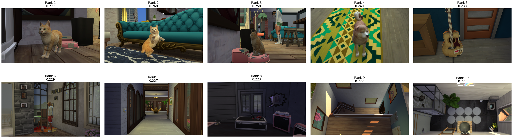
CLIP accurately isolated the top three cat assets. A dog render appeared at rank 4 (0.233), reflecting a common taxonomic error within the quadruped latent space. Interestingly, rank 5 returned a guitar, suggesting the text vector mapped onto the contoured silhouette and structural neck of the instrument as a geometric proxy for feline anatomy.
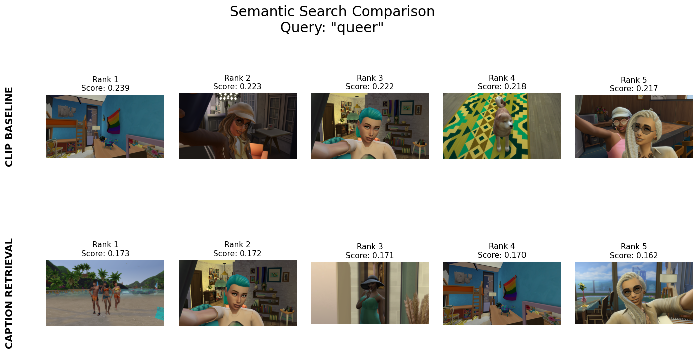
The shared vector space successfully mapped this sociocultural concept directly onto the high-contrast chromatic spectrum of the rainbow flag asset, demonstrating CLIP's strength in associating symbolic text tokens with explicit visual iconography.
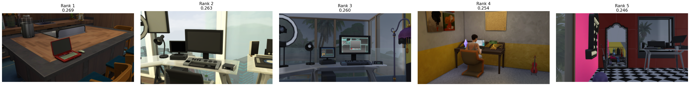
The retrieval engine executed a precise query-to-object match across the corpus, successfully grouping all screenshots containing monitor bezels, keyboards, and office desks due to highly consistent object-attribute weights.

CLIP successfully indexed all designated kitchen layouts. At the tail end of the distribution, it included a bathroom render, indicating a latent overlap driven by shared indoor spatial textures, glossy tiling surfaces, and structural counter fixtures.
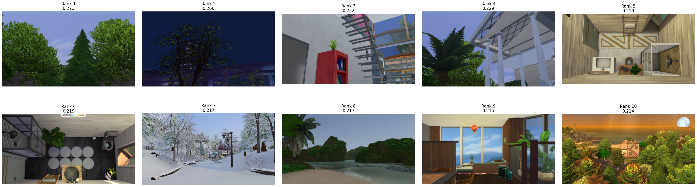
The embedding model confidently mapped outdoor foliage clusters. However, it demonstrated a spatial scale limitation by occasionally treating indoor potted plants as full trees, prioritizing the botanical leaf textures over environmental context constraints.

While the corpus lacks real-world photography, CLIP extracted city living architectural features flawlessly. Three out of the top five slots returned landscapes heavily inspired by New York geometry, verifying its ability to translate geographic concepts into virtual design styles.
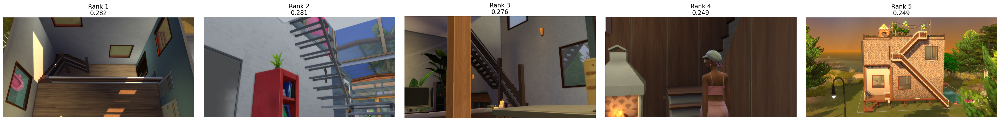
An exceptionally robust visual pattern match. The text vector successfully isolated the repetitive, hard-edged diagonal line sequences that characterize staircases across all instances within the architectural renders.
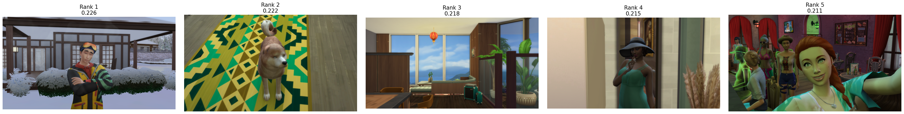
The model mapped this broad descriptor across multi-modal cultural markers: identifying traditional Chinese lanterns, Japan-inspired environment designs, and specific native Asian dog breeds, alongside guessing the demographic background of three styled characters.
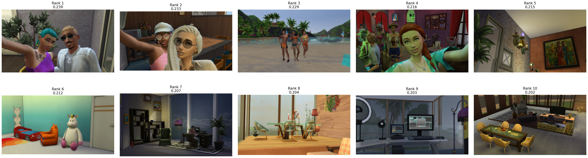
A systematic abstract failure mode. While the query returned multiple characters and pushed a child's bedroom into the top distribution, the model failed to compute the underlying social relationship structure, demonstrating CLIP's struggle with complex semantic human interactions.
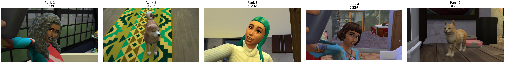
Despite the presence of explicit toddler screenshots and dedicated children's playroom assets within the 87 images, CLIP failed to establish a match. The stylized 3D proportions of Sims avatars likely fall outside the standard human demographic visual bounds of the pre-trained model.
Level 2 Showcase: Vision-Language Comparative Atlas
Evaluating direct CLIP vector mapping against Gemma 3 structural caption embeddings across 87 personal Sims 4 assets.
Prompt Engineering Diagnostic: The "Sim Taxonomy" Loop
During the initial generation pass, an overarching vision-language failure emerged: the model iteratively tagged assets with generic, unhelpful phrases like "sim girl," "sim boy," or "human." Because these identical tokens populated nearly every single file in the cache, the vector space compressed, rendering specific character retrieval mathematically impossible.
💡 Solution: The caption generation loop was fine-tuned with strict contextual constraints, forcing the VLM to bypass basic identity tags and instead prioritize granular architectural attributes, environmental lighting weights, weather phenomena, and distinct action states.

Both retrieval paradigms performed flawlessly. CLIP easily mapped the global white color distribution and high luminosity values of the winter scenes, while the VLM caption layer successfully queried the explicit text tokens describing outdoor weather environments.

Both models correctly isolated screenshots of characters holding phones at steep arm-length angles. Due to the background complexity of the virtual spaces, both systems included some additional domestic interiors in the lower-ranked results, but preserved high initial precision.

A major victory for Level 2 captioning. The text-retrieval pipeline successfully parsed explicit descriptions of nighttime scenes. CLIP experienced a visual abstract failure, pulling a flat, dark-blue interior wallpaper asset into the top-1 slot by treating its color profile as a literal midnight sky.

For raw, single-token color retrieval, CLIP significantly outperformed the VLM layer. CLIP handles raw pixel-wavelength maps instinctively, pinning heavily saturated blue assets instantly. The caption engine lagged behind because its fine-tuned design focused on objects and actions rather than indexing every background hue.

Both engines demonstrated an impressive capacity for abstract mood translation. CLIP recognized localized warm lighting matrices and dense room clutter, while the VLM mapped descriptions of soft textiles, burning fireplaces, and warm domestic spaces onto the prompt.
CLIP pinned the high-contrast rainbow flag immediately due to explicit color association. The caption model successfully recognized the rainbow asset textually, but its optimized human-centric design gave priority to the expressive characters framed within the scene, shifting the flag lower down the list.

The caption model correctly pulled coastal horizon screenshots. CLIP failed the query by matching generic city street perspectives; because those specific urban paths leading down toward the water function as game directions within the gameplay collection, CLIP's visual vector confused structural roads with actual beach terrain.

When the query was reduced from the complex spatial concept of "seaside" to the literal object "sea," both architectures realigned perfectly. CLIP isolated the flat, uniform blue-cyan horizontal water blocks, while the VLM engine matched the explicit oceanic descriptions written into your cache.
RAG Extension: Conversational Archive Chat
Synthesizing vector store indices and language model reasoning to handle interactive database QA over the Sims 4 collection.
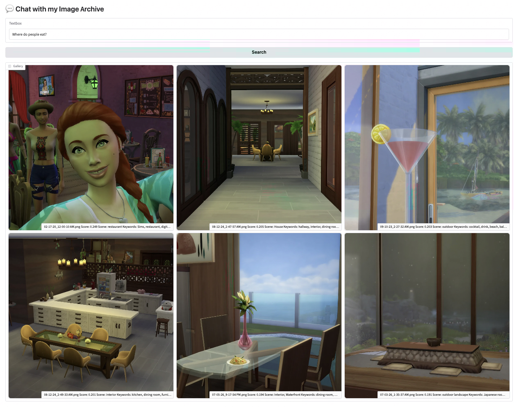
The vector index retrieved screenshots containing dining room sets, bars, and kitchen island counters. Synthesizing these descriptions, the RAG agent accurately identified areas equipped with barstools, functional dining tables, and kitchen surfaces as the primary social zones for dining within the domestic gameplay setups.
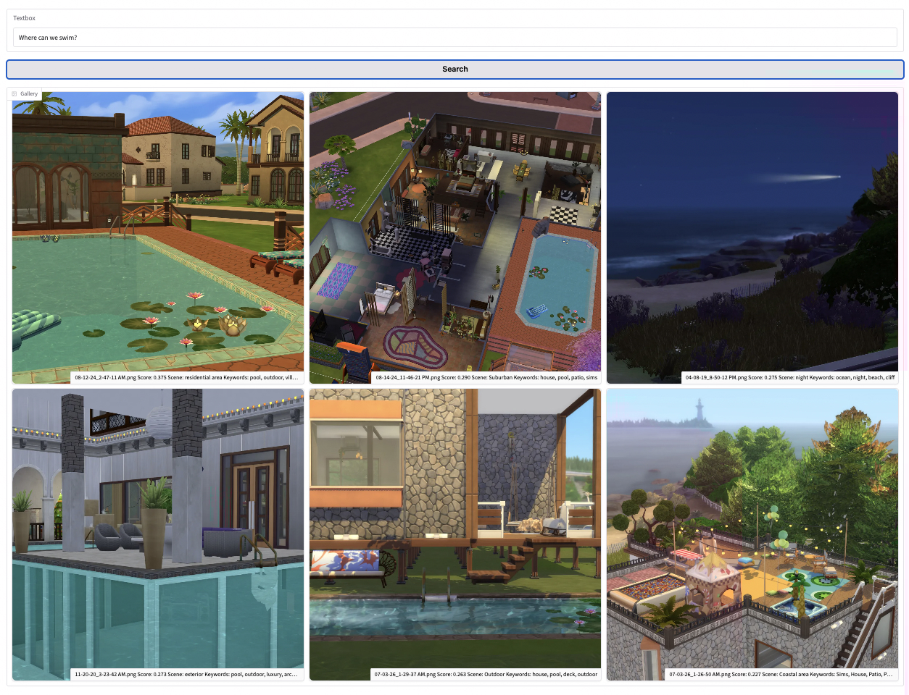
The query pulled assets depicting open water, pool ladders, and coastal shorelines from packs like Sulani. The system cross-referenced these blue-cyan horizontal outdoor coordinates with the fine-tuned caption variables to determine that the swimming pools and open ocean spaces are the explicit environments for aquatic locomotion.
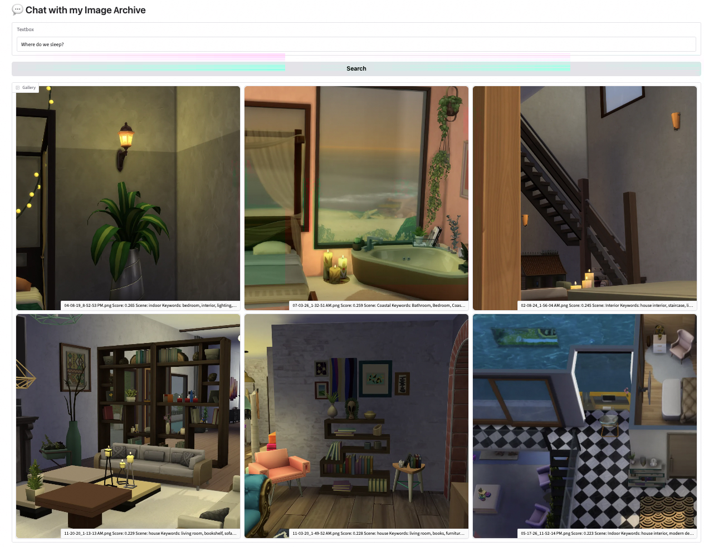
The engine isolated bedroom assets, indexing double beds, cribs, nightstands, and low-ambient lighting states. The language model synthesized these visual-textual bounds to verify that these secluded residential chambers are designated for rest, isolating toddler rooms and master suites from common living zones.
Project Evaluation
The comparison demonstrates that direct CLIP embeddings perform well for visual similarity, while caption-based retrieval better captures conceptual queries expressed in natural language. Structured captions also improve interpretability by making the semantic reasoning process visible. Although both approaches have limitations, combining Vision-Language Models with semantic embeddings creates a more transparent and flexible retrieval workflow.
The archive consists of only 87 images, limiting quantitative evaluation. Results depend heavily on caption quality and prompt engineering. Furthermore, semantic retrieval cannot always resolve ambiguous concepts or perform exact counting and spatial reasoning. The project focuses on qualitative comparison rather than benchmark performance.
Sources & References
- OpenAI CLIP
- Google Gemma 3 Vision-Language Model
- SentenceTransformers (all-MiniLM-L6-v2)
- PyTorch
- Gradio
- Hugging Face Transformers
AI Collaboration Statement
In accordance with academic integrity guidelines, this project utilizes a collaborative human-AI workflow. Artificial intelligence was employed across two distinct domains: as a data processing layer within the research pipeline and as an execution partner during web development.
Specifically, OpenAI CLIP and Gemma 3 were deployed as the core computer vision models to embed, caption, and run semantic math queries across the personal archive of 87 images. For the presentation layer, conversational AI tools were used to co-author and refine the semantic-space reasoning prose, format the responsive HTML/CSS layouts, and debug web script exceptions. All architectural curation decisions, custom prompt design engineering, qualitative failure analysis, and overall visual design direction remain the original work of the author. Ilayda Dinc | July, 2026